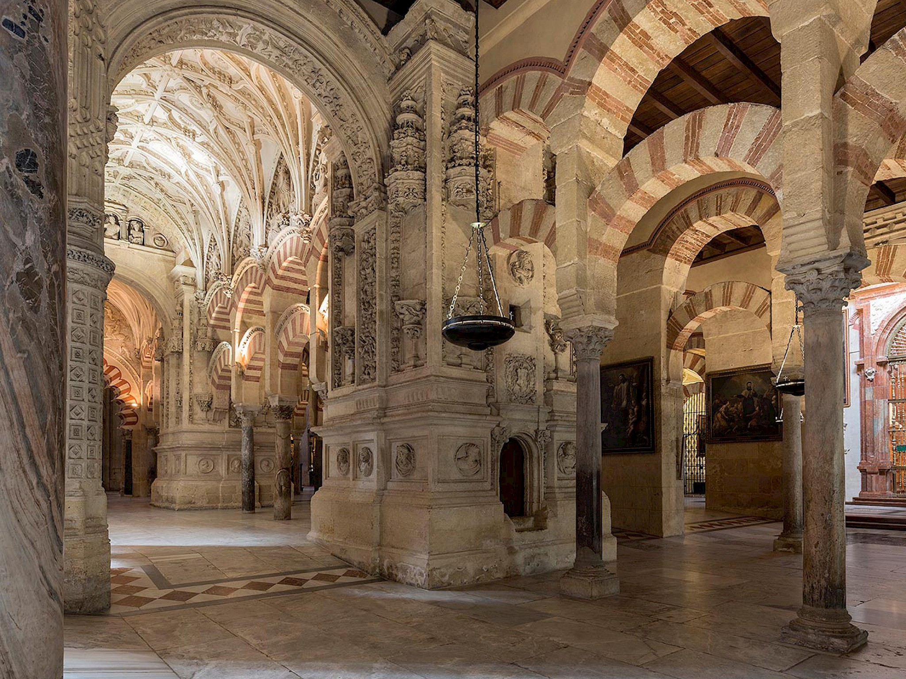
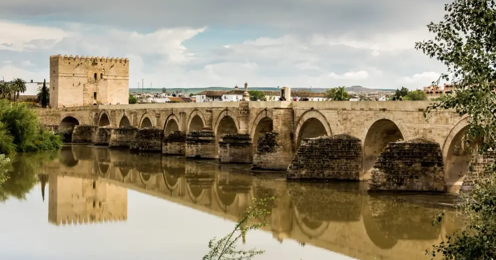
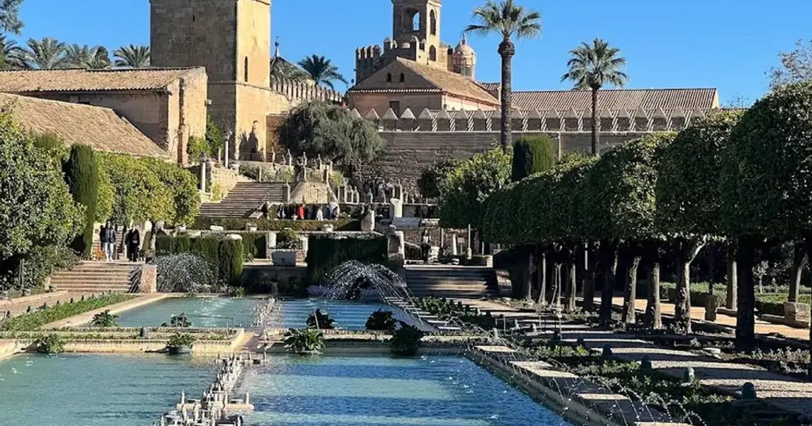
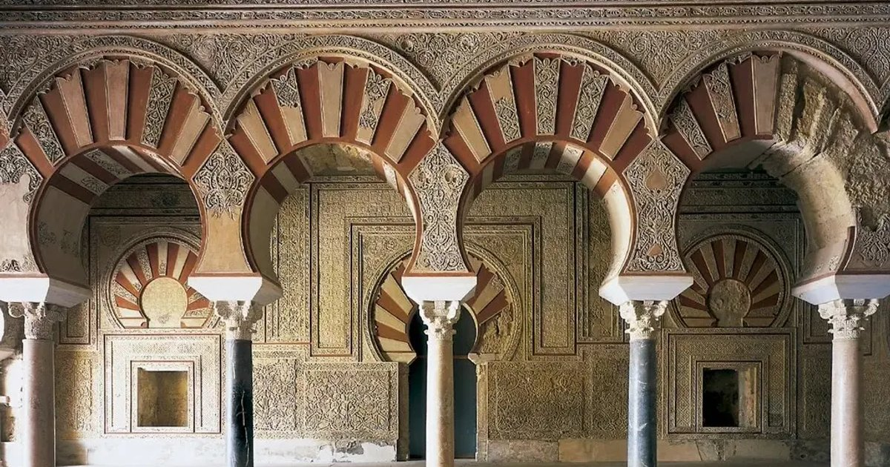
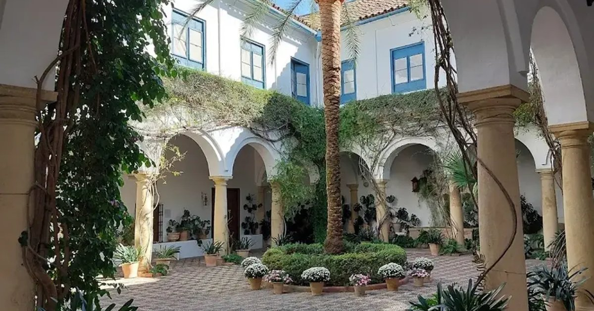

expedition · andalusia · june 2026 · 12 scenes
Córdoba —
A Weekend in Two Acts
ANCHOR: Noor (3★) ·
LOCATIONS: Mezquita · Alcázar · Medina Azahara · Judería ·
DURATION: 2 days
Noor —
2–3 months ahead for Fri/Sat
[2];
€120/pp cancellation within 48h
[4]
Medina Azahara — slots open
7 days ahead at museosdeandalucia.es
[22]; required even for free-entry EU visitors
[17]
Hammam Al Ándalus — book
24–48h ahead[11]
June note: Patio Festival ended May 17
[24] · Alcázar summer hours kick in Jun 16
[8]
Scene 01
EXT. Mezquita-Catedral
·
Establishing Shot
08:30

mezquita-catedraldecordoba.es
Enter free 8:30–9:30 am (Mon–Sat individuals only; no groups, cathedral areas closed).
[6]
The reason to come to Córdoba: a forest of
856 columns under double-stacked horseshoe arches,
and a gilded mihrab built with
1,600 kg of Byzantine gold tessera
gifted by the emperor in Constantinople.
[7]
Budget 1.5–2 h.
Director's note
Official tickets: €15 adult · €12 reduced · €8 children 10–14 · Bell tower +€4.
After-dark "Soul of Córdoba" light show also available.
Scene 02
EXT. Calleja de las Flores
·
Close-Up
09:30
A dead-end alley lined with
blue geranium pots — the Mezquita's bell tower framed perfectly at the far end.
Shot this immediately on the way out while crowds are thin.
[12]
Director's note
Best before 9:30 am or after 7 pm. Mid-morning to early afternoon is unusable — tour groups stack end to end.
Scene 03
EXT./INT. Judería circuit
·
Tracking Shot
10:00
A
1.8 km walking circuit through whitewashed medieval lanes: the Synagogue (built 1314–1315, one of only three surviving medieval synagogues in Spain)
[13], Casa de Sefarad,
and the narrowest streets in Córdoba —
fully pedestrian, no vehicles.
[13]
~2 hours at a comfortable pace.
Director's note
Zoco Municipal de Artesanía (Spain's oldest craft market, opened 1956) is along this route — guadameci leather notebooks €15–40, silver filigree jewellery €25–150.
Scene 04
INT. Hammam Al Ándalus
·
Cut To
14:00 – 17:00
The 2–5 pm siesta is an operational dead zone — most sights close, the heat is
40°C+.
[23]
Hammam Al Ándalus solves it: three temperature pools, steam room, towel, robe and mint tea.
Circuit from €12.
[11] Sessions 10am–midnight; arrive 30 min early.
Director's note
Book 24–48h ahead. Address: Corregidor Luis de la Cerda 51, steps from the Mezquita.
Massage packages available at higher price tiers.
Scene 05
INT. Noor
·
Night Shoot
20:30
Noor — Córdoba's only 3-star Michelin restaurant (awarded 2023).
Season 10
Tiempo de Evolución walks through Al-Andalus history:
no ingredient may appear before the era being explored — no tomatoes, peppers, or potatoes until the dish reaches the 15th century.
[3]
Three menus:
RUH €195 · FATH €220 · KAWN €305 (wine pairing +€90/€105/€145).
What you eat mirrors what you'll see at Medina Azahara.
Director's note
Open Thu–Sat only. Weekend slots fill
2–3 months ahead.
[2]
Fallbacks:
Choco (1★, €120–150, Kisko García, closed Sun–Mon) ·
ReComiendo (1★ 2026, €95–150, Periko Ortega, Wed–Sat) — both on far shorter booking timelines.
Scene 06
EXT. Roman Bridge
·
Night Shoot
23:00

explorecordoba.com
Post-dinner bridge walk. The
Roman Bridge — 1st-century BC, 16 arches, 331 m — pedestrianised and lit after dark.
[20]
The Mezquita illuminated across the water. Free, open 24/7.
The natural cap on Act I.
Director's note
Also the ideal sunset point — the Calahorra Tower on the far bank gives the panoramic rooftop view (€4.50, splits to two sessions in summer: 10:00–14:00 and 16:30–20:30).
Scene 07
EXT. Alcázar de los Reyes Cristianos
·
Wide Shot
08:30

explorecordoba.com
Terraced gardens with long
reflecting pools, the Hall of Mosaics (Roman originals rescued from the Corredera), and 14th-c. Royal Baths of Doña Leonor.
[8]
€5 adult;
free Fridays; closed Mondays.
[9]
Budget ~2 hours.
Director's note — critical timing
Summer hours (Jun 16–Sep 15) close at 14:45 on Sun/holidays. Lock this in the morning.
After Jun 16, the Alcázar becomes morning-only — go early regardless.
Scene 08
EXT. Paseo de la Victoria → Medina Azahara
·
Tracking Shot
10:00
The dedicated tourist bus departs from
Paseo de la Victoria
(Glorieta Cruz Roja / opposite Mercado Victoria) at
10:00 (returns 13:30)
or 10:45 (returns 14:15).
[18]
€10 adults, €5 children 5–12. 25 minutes including on-site shuttle.
Director's note
If you miss the return bus, no alternative transport exists.
[18]
Bring cash for the internal site shuttle (€3/pp).
Scene 09
EXT. Medina Azahara — caliphal city
·
Establishing Shot
10:30 – 13:00

explorecordoba.com · UNESCO 2018
The 10th-century Umayyad caliphal city, ~8 km west of Córdoba —
UNESCO World Heritage Site 2018.
[15]
Built as the seat of the Caliphate; sacked 1009–1010; rediscovered in excavation.
The on-site museum (Aga Khan Architecture Prize 2010) is best visited first.
[16]
Entry free for EU citizens; €1.50 others.
Culinary mirror of Noor's Season 10 — same era, different medium.
Director's note
Book timed slot at museosdeandalucia.es — opens 7 days ahead.
Free-entry visitors still need a reservation and must show ID.
[17]
30-minute arrival window; site shuttle (€3 cash) goes from reception to ruins.
Scene 10
EXT./INT. Palacio de Viana
·
Tracking Shot
16:00

explorecordoba.com
Palacio de Viana —
12 courtyards layered across five centuries.
The year-round substitute for the May patio festival.
[14]
Patios-only €8 · Patios + palace interior €12 ·
Free Wednesdays 2–5 pm.
Open Tue–Sat 10:00–19:00, Sun 10:00–15:00; closed Mondays.
Director's note
San Basilio patios (~11 patios, most award-winning, Alcázar Viejo district) open on varying afternoons
Sep–Jun — a free complement within 400m of the Mezquita.
Scene 11
EXT. Roman Bridge — golden hour
·
Wide Shot
19:30
The standard viewpoint: the
Mezquita silhouetted across the Guadalquivir as the light drops.
Free, open 24/7.
[19]
Calahorra Tower rooftop (€4.50) gives the panoramic version with height.
Director's note
Calahorra Tower summer hours split to 10:00–14:00 and 16:30–20:30 — the evening session catches golden hour from the rooftop.
Scene 12
INT./EXT. Posada del Potro
·
Night Shoot
22:00
Posada del Potro — free Café Cantante flamenco cycle,
Saturdays at 22:00, June 6–July 4 2026.
[21]
Tickets distributed 90 minutes before the show. Free until capacity.
If Noor is on a Thursday, this is your Saturday night cap.
If Noor is on a Saturday, swap flamenco to Friday (Tablao El Cardenal, €25, 8:30pm).
Director's note — the open question
The Hammam, the Julio Romero de Torres museum (Plaza del Potro, free Thursdays from 18:00), and flamenco: only one or two fit without crowding the dinner.
Dinner night is the deciding variable for the whole evening sequence.